Dynamic Meditation
Through chaotic breathing, catharsis, the Hoo sound, stillness, and celebration, take doing to its peak and then enter non-doing and witnessing.
♫ Practice audio▷ Video guide
Enter PracticeYou do not need to understand every method first. Choose one and enter it fully; every method has step-by-step guidance, and many have audio and video.
You do not need to learn everything at once. Active meditations first move the body and energy; passive meditations enter more directly through breath, acceptance, and witnessing.
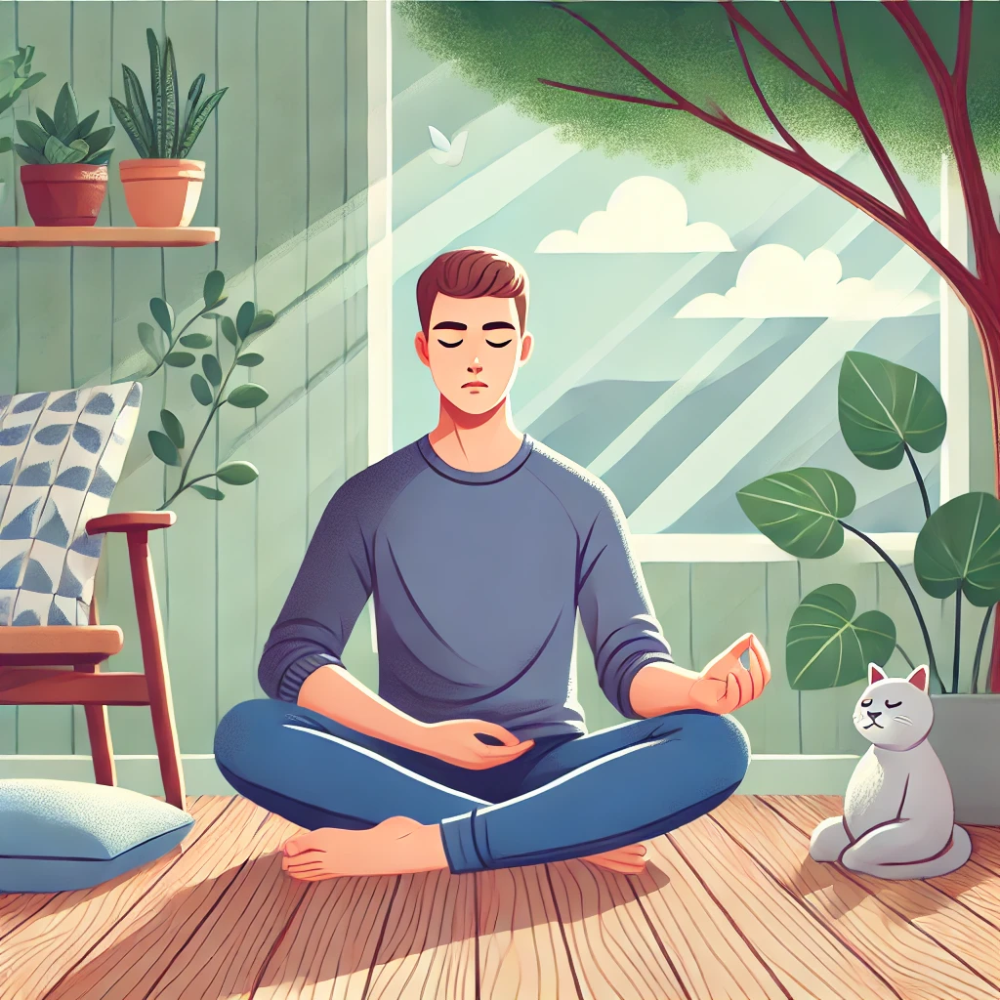
Take energy to a peak, then enter non-doing and witnessing.
Enter Practice →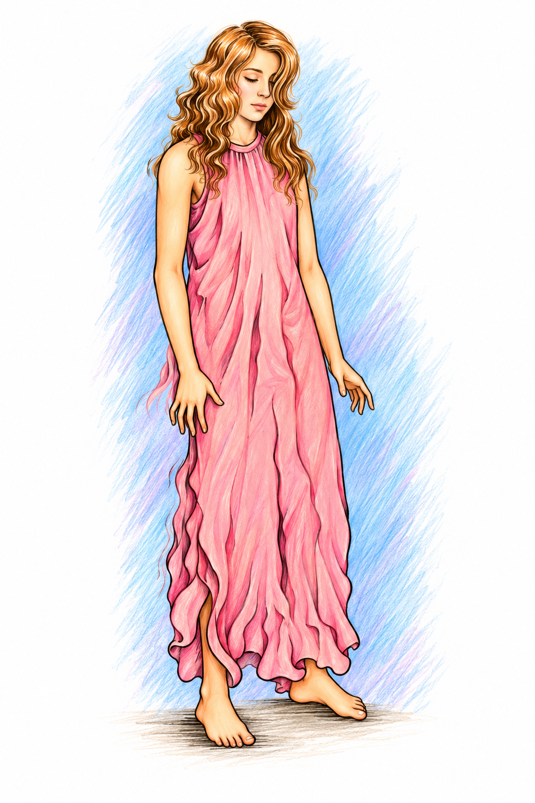
Let the body move from rigidity into flow, then watch in stillness.
Enter Practice →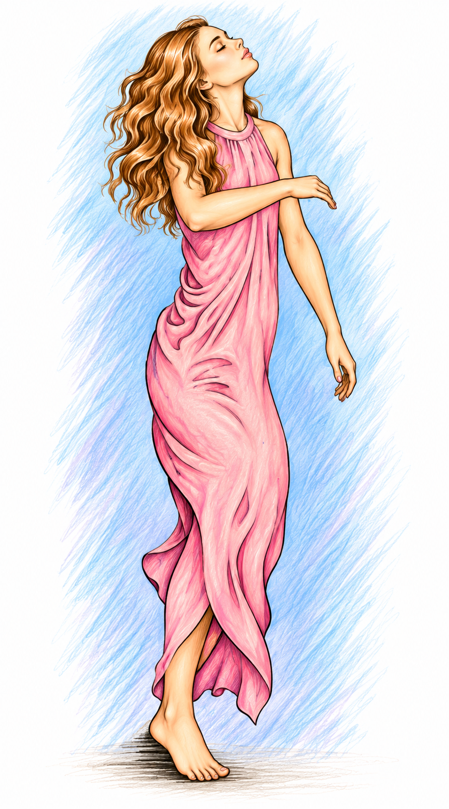
Not “I am dancing”—let the dance happen by itself.
Enter Practice →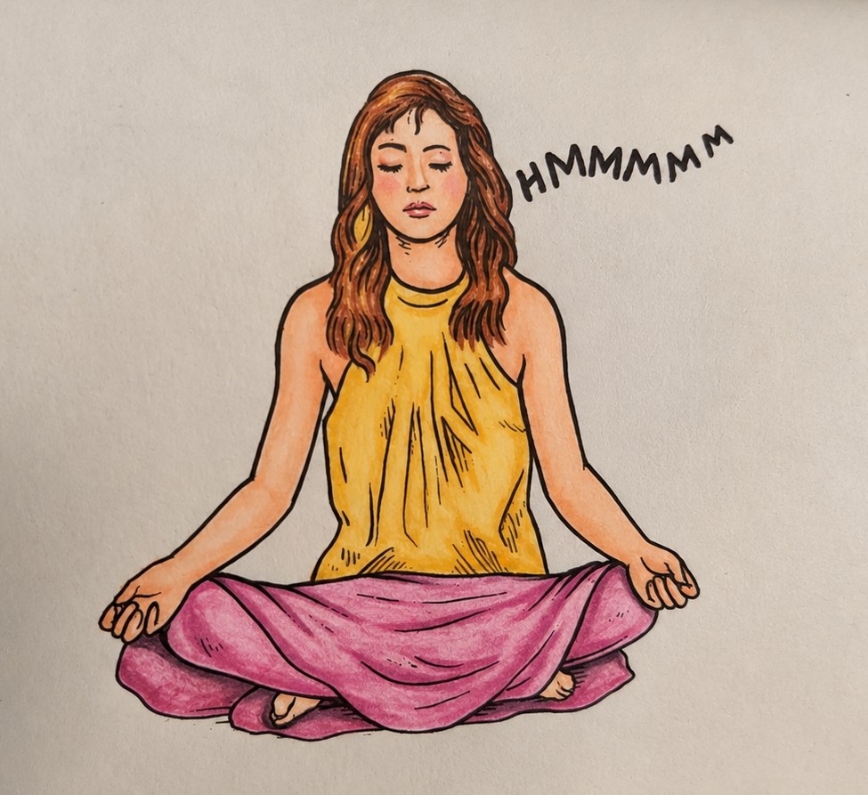
Use humming and subtle movement to harmonize body and mind.
Enter Practice →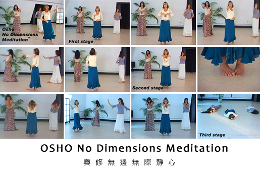
A complete sequence of repeated movements, whirling, and stillness.
Enter Practice →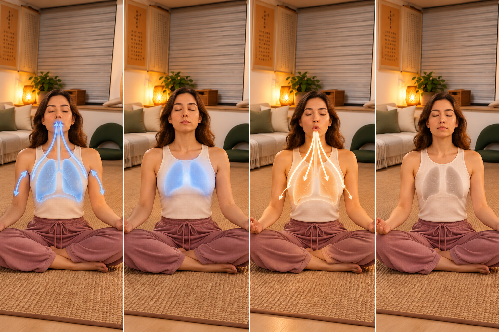
Breath, light, spontaneous movement, and stillness unfold in stages.
Enter Practice →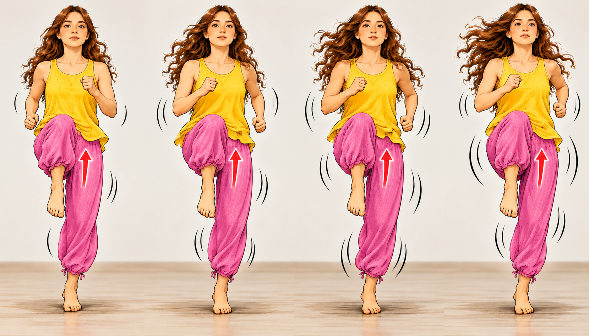
Build a circle of intense energy, then return to the center.
Enter Practice →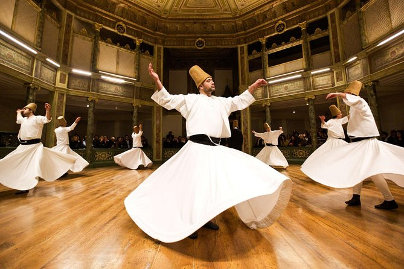
Let the outer body become a turning wheel while the inner center remains still.
Enter Practice →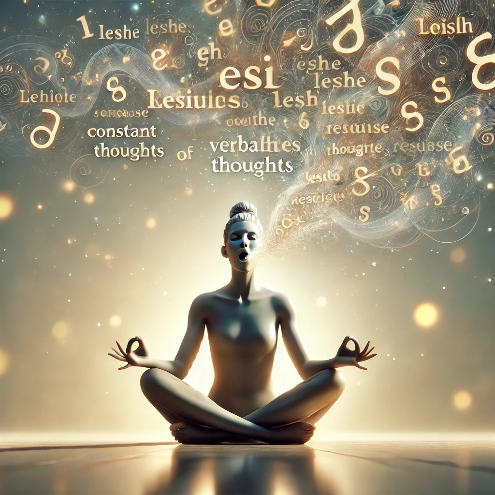
Empty the verbal mind, then enter sitting and letting go.
Enter Practice →Choose active or passive first, then narrow the list by breathing, movement, sound, catharsis, sitting, bedtime, and more.
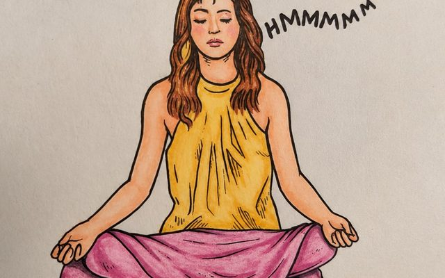
If you can see a thought, you do not have to become every thought.
72 methods in two groups. Use the search or the filters above to narrow them down.
Let the body, breath, voice or emotions move fully first: dance, shake, laugh, hum or chant. Then enter stillness and witnessing.
Through chaotic breathing, catharsis, the Hoo sound, stillness, and celebration, take doing to its peak and then enter non-doing and witnessing.
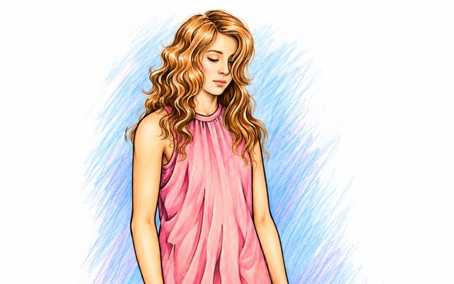
A sister method to Dynamic Meditation. The point is not to manufacture shaking, but to allow it to happen so the body can move from rigidity into flow.
A three-week meditation therapy: first let laughter open space, then let tears cleanse accumulated sadness, and finally enter the 'Watcher on the Hill.'
Enter Practice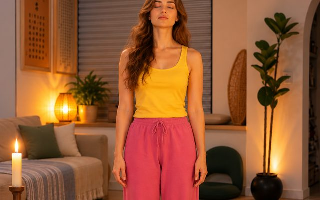
Use meaningless sounds to break the mind's continuous verbalizing, then sit in witnessing, and finally let the body go completely.
For the first hour return to childlike play and natural expression; for the second hour, simply sit in silence.
Enter Practice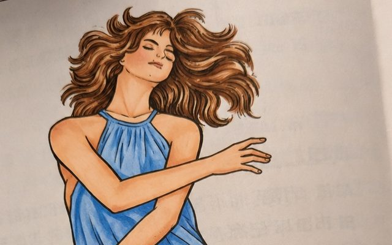
Let dancing happen by itself until the sense of a separate dancer dissolves, then enter stillness and celebration.
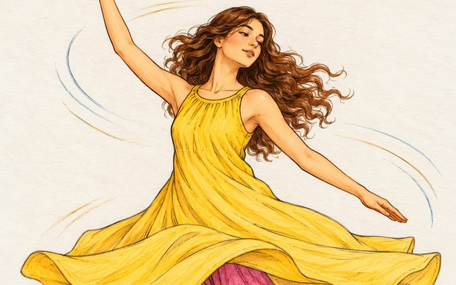
Let the body become a turning wheel while discovering the unmoving center. After falling, enter rest and a sense of merging with the earth.
During activity, let body, mind, and heart become one. When the 'runner' disappears and only running remains, movement itself can become meditation.
Enter PracticeGenuine laughter and continuous thinking cannot easily happen at the same time. Let laughter arise from deep in the body rather than remain a surface expression.
The story of the Laughing Buddha, Hotei, reminds us that sometimes the most direct doorway is not explanation but total laughter.
Enter PracticeWhen the mind is anxious or chattering, try a full exhalation followed by a full inhalation, with brief comfortable pauses at both ends to create a rhythmic breath.
Enter PracticeUse continuous humming to bring body and mind into resonance, then let energy move through slow hand gestures, and finally enter stillness.
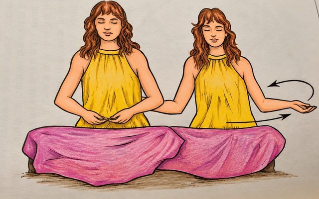
A version for couples, in which two people use shared humming and stillness to soften the sense of separate personal centers.
Enter PracticeLet soft, unfamiliar, meaningless sounds speak through you without being designed by the mind; then allow the body to move naturally, and finally lie down in silence.
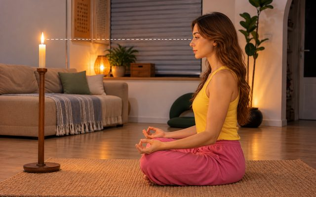
Four fifteen-minute stages: breathing with comfortable retention, soft gazing, Latihan-like spontaneous movement, and lying quietly.
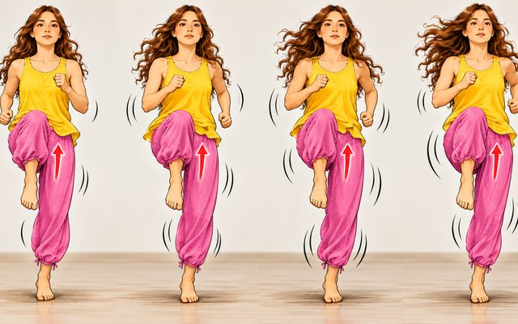
Four stages move energy from full-body activity toward the navel and third-eye area, and finally into complete stillness.
The story of Buddha holding up a flower and Mahakashyapa laughing reminds us that silence is not empty of meaning, and simplicity is not poverty.
Enter PracticeIntimate relationship becomes a field for exploring energy and witnessing. The point is not performance, but not losing your center amid intense sensation.
Enter Practice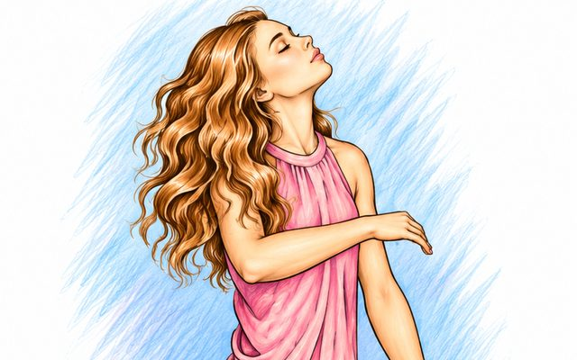
A practice made of centered movements, whirling, and stillness.
Use rhythmic breathing, body awareness, and stillness to explore energy.
Through singing and music, let body, breath, and feeling become one whole.
Interfere less and let things happen: sit, lie, breathe, listen, look within, or bring awareness into ordinary moments.
Smoking is used to illustrate 'de-automatization.' It does not encourage anyone to begin smoking; it asks an existing mechanical habit to be slowed down and seen clearly.
Enter Practice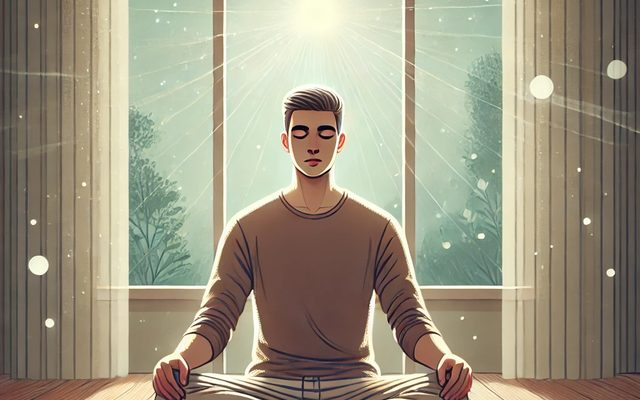
Use natural breathing as the doorway, primarily watching the rise and fall of the abdomen. When thought, feeling, or sound appears, include that too in awareness.
Enter PracticeWalk slowly and notice the feeling of each step meeting the ground. Do not force concentration; simply notice when attention has moved away.
Enter PracticeBuddha used natural breathing as an entrance into awareness: do not force the breath; stay with each inhalation and exhalation, and let awareness gradually include sounds and the whole of existence.
Do not change the breath. Follow inhalation and exhalation, and notice the very brief natural gap between them.
Enter PracticeCarry awareness of the gap in the breath into eating, walking, working, and bedtime. Action continues while the center remains witnessing.
Enter PracticeAt the edge of sleep, keep a thread of awareness of breathing and inner sensation, so that dreaming and knowing that dreaming is happening gradually become distinct.
Enter PracticeUse the imagination of 'no head' and a more loving way of relating to shift the center of life from mental analysis toward the heart's wholeness.
Enter PracticeObserve how the same identity and pattern repeat across situations, and allow a different response to become possible.
Enter PracticeUse movements toward the sky and then toward the earth to experience receiving, giving, and merging; allow the body's trembling to happen naturally.
Enter PracticeFirst allow the whole body to relax deeply, then bring awareness to the area between the armpits—the center of the chest.
Enter PracticeWhen touching a person, tree, flower, or the earth, do not touch only with the hand; feel the hand as an extension of the heart.
Enter PracticePractice compassion through the breath: on the in-breath, make space for suffering; on the out-breath, share joy and blessings.
Enter PracticeBefore extending compassion to the whole world, begin with your own pain instead of escaping your own wounds.
Enter PracticeWhen joy, anger, or sadness appears, do not look only at the outer cause; turn inward and find the place from which the feeling is actually arising.
Enter PracticeNeither suppress the emotion nor dump it on others. Let it be expressed in a safe space while remembering that there is a center watching it.
Enter PracticeDo not turn 'I am' into a sentence. While walking, touching, or looking at a tree, directly feel that you are existing.
Enter PracticeKeep asking 'Who am I?' without accepting the mind's identity-based answers; let the question take the mind toward silence.
While seeing an object, also be aware of who is seeing. Let the known and the knower be present together; the third point—witnessing—can then appear naturally.
Enter PracticeClosing the eyes is not only shutting out the outer world; let inner images also become quiet until attention begins to move inward.
Enter PracticeWhen looking at an object, do not move from part to part. See it as one whole while temporarily dropping analysis of material, name, and value.
Enter PracticeOrdinarily consciousness flows toward objects. This practice lets you look outward while also knowing yourself, creating a returning circle.
Enter PracticeJust after waking or before sleep, while the body is deeply relaxed, imagine golden light entering through the crown and flowing through the body.
Enter PracticeDo not experience light only as an outer visual object; feel a quality of brightness and warmth in the center of the heart.
Enter PracticeWith sensitive seeing, notice the subtle sense of light and space around bodies and objects that is usually overlooked.
Enter PracticeBegin with a candle to train sensitivity, then carry the feeling that 'light is everywhere' into flowers, leaves, stones, and the whole world.
Enter PracticeIn a moonless or deeply dark setting, keep the eyes open and look into real darkness, allowing it to enter you rather than creating mental imagery.
Enter Practice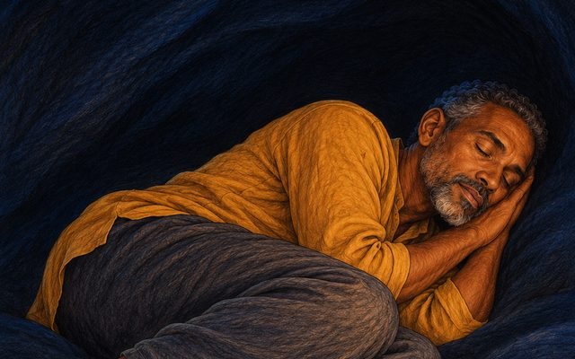
First close your eyes and feel the darkness within, then open your eyes and keep that feeling of darkness; this is presented as a more difficult, advanced practice.
Enter PracticeImagine your essential being as light moving upward from the base of the spine through each center.
Enter PracticeIf gradual visualization does not suit you, feel energy leaping like lightning from one center to the next.
Enter PracticeWhen listening to music, do not chase note after note; listen for the main current running through them and holding them together.
Enter PracticeClose your eyes and feel sounds arriving from every direction. You are at the center of the circle, and the center itself is silent.
Enter PracticeStrike a bell or make one sound, then follow it from the first instant through its fading until it disappears completely.
Enter PracticeLook into a cloudless, limitless sky. Do not think about the sky; let yourself dissolve into its clarity and boundlessness.
Enter PracticeWhile sitting, include body, breath, thoughts, feelings, and knowing itself. Do not say 'this is not me' and do not fix yourself at one center.
Enter PracticeUse the height and openness of the sky to explore the sense of your body's boundaries expanding, until you merge with the spaciousness of the sky.
Enter PracticeLook at a tree, flower, or person with full awareness, then gradually feel the 'absence' after the object is gone while awareness remains.
Enter PracticeSit like a hollow bamboo: the form of the body is present, while inside there is emptiness. Relax and wait without demanding that anything happen.
Enter Practice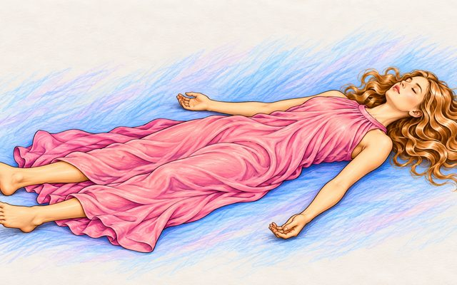
Treat death as part of the process of life; through complete exhalation, relaxation, and witnessing, explore the quality of letting go.
Enter PracticeWhen life is truly lived, death need not be seen only as disaster; the practice is to include both living and dying in witnessing.
Enter Practice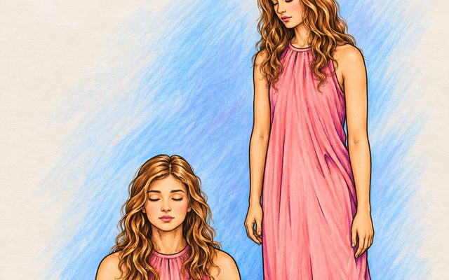
Bring attention to the space between the eyebrows and let thoughts pass like images on a screen; stop becoming one with every thought.
Enter PracticeRest the palms on the closed eyes as lightly as feathers, without pressure; this is presented as a way for energy flowing through the eyes to turn inward.
Enter PracticeKeep the eyes half open and rest the gaze gently on the tip of the nose, reducing both outer distraction and inner dreaming while bringing attention into line with the third-eye area.
Enter Practice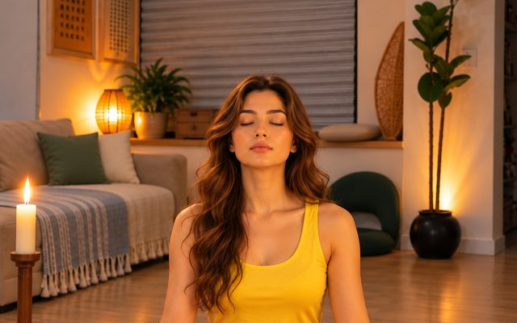
Face a blank wall or quiet space. Keep the body stable, breath natural, and gaze soft. Do not concentrate on one point; remain open and alert.
Enter PracticeDo not seek a state or perform complicated steps. Sit and let breath, thoughts, and sounds come and go without following them.
Enter PracticeLet love shift from 'I need you to fulfill me' into sharing and circulation of energy. The less possession, the more space.
Enter PracticeAllow sound to move from clear and audible toward subtler levels, finally falling into the silence beyond sound.
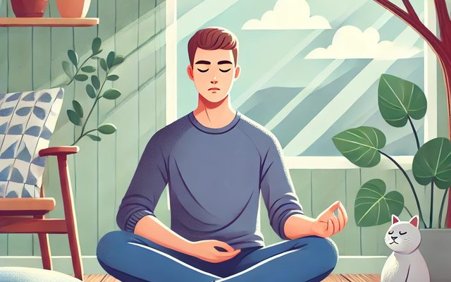
Use the existing audio guidance to return attention to natural breathing.
Keep the original audio entry as a supplementary quiet practice.
This is a practice of total letting go: do not fight life or rush to change experience. Remain awake while exploring surrender, dissolution, and complete acceptance.
Enter PracticeNight Meditation gradually loosens your hold on body, breath, and thought. When all three settle, do not chase sleep or a special experience; keep only a small, clear flame of watching.